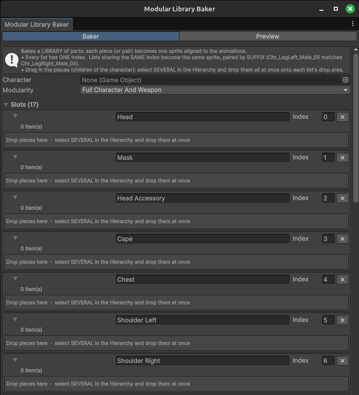
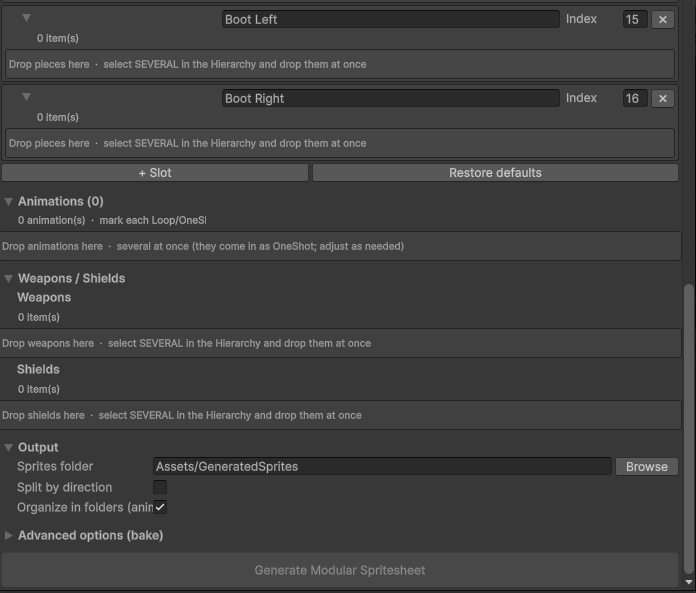
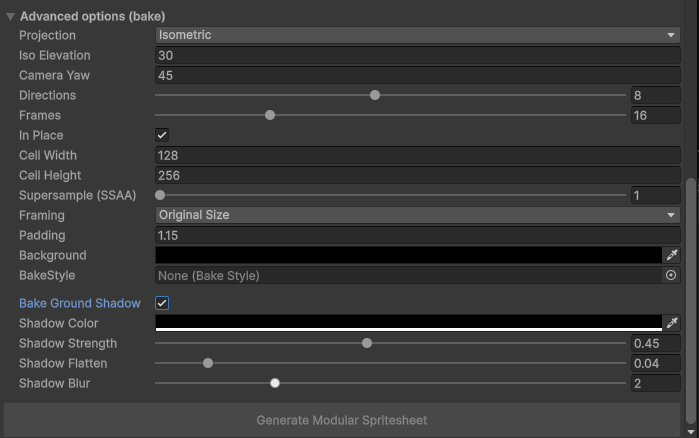
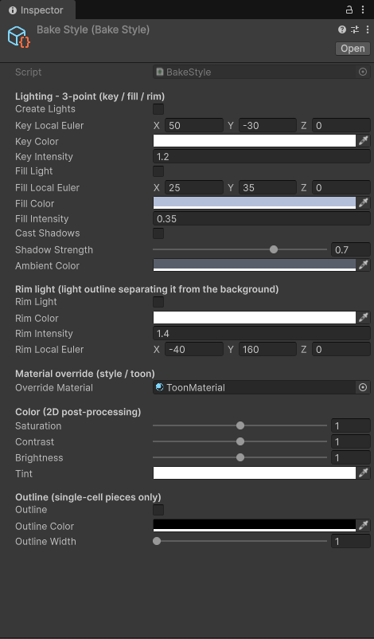
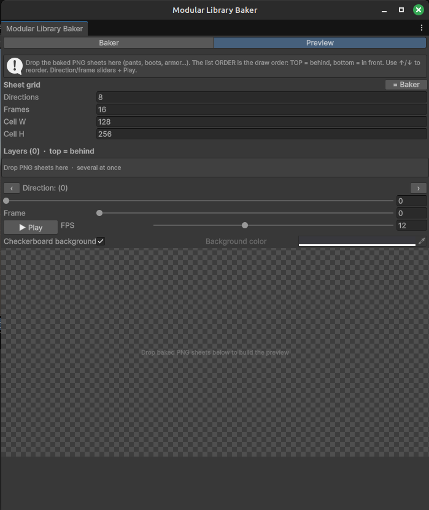

Unity Editor Tool · User Manual
Paper Doll Machine
Bake a modular 3D character into a library of perfectly aligned 2D sprite sheets — one sheet per body part, ready to layer at runtime.
1What this package does
Modular 3D characters are built from interchangeable parts — a head, a chest, a left boot, a right boot, a cape. Paper Doll Machine renders each of those parts into its own 2D sprite sheet, with every sheet framed identically, so you can stack them back together at runtime and swap any single part without re-exporting anything else.
That is what makes it a paper-doll pipeline rather than a plain sprite exporter: because all sheets share one camera framing, the boots from outfit A line up pixel-for-pixel with the chest from outfit B, in every animation and every direction.
What you get
- Modular Library Baker — the main editor window. Assign your character, list the parts, pick the animations, press one button.
- Built-in Preview tab — stack the baked sheets and scrub or play the animation inside Unity, before you write a single line of game code.
- Bake Style asset — a reusable lighting, color and outline profile, so every bake in your project shares one consistent look.
- Supersampling (1–8×) with premultiplied-alpha downscaling — smooth sprite edges with no dark halo.
- Ground shadow pass, 8-direction output, Loop/OneShot aware frame sampling, and a JSON manifest describing everything that was produced.
Typical uses
- Isometric or top-down RPGs with equipment the player can see and change.
- Turning an existing modular 3D character pack into 2D assets.
- Producing a consistent sprite library for prototypes without hand-drawing every outfit combination.
2Requirements
| Item | Requirement |
|---|---|
| Unity | 2022.2 or newer |
| Render pipeline | Built-in or URP |
| Character rig | An Animator with a Humanoid Avatar |
| Character structure | Parts as separate child GameObjects that can be shown/hidden |
| Animations | One or more AnimationClip assets that play on that rig |
To render one part on its own, the tool toggles GameObject.SetActive on the part objects — the same mechanism most modular character packs already use to switch variants. Your parts therefore need to be separate child GameObjects, not sub-meshes of a single combined mesh.
This package contains the tool only. Use it with your own modular character, or with one from any third-party pack you own.
3Installation
- Import the package into your project. Everything lands in a single
Paper Doll Machinefolder. - Wait for Unity to finish compiling.
- Open the tool from the menu bar: Paper Doll Machine ▸ Modular Library Baker.
The package ships as two assembly definitions — a small runtime assembly and an editor-only one — so it compiles independently of your own scripts and is excluded from builds where appropriate.
4Quick start
This is the shortest path from a character in your scene to a folder of sprite sheets.
- Put your character in the scene and assemble it the way you want it to look by default. The framing is computed from this assembled state.
- Open Paper Doll Machine ▸ Modular Library Baker and drag the character's root GameObject into the Character field.
- Fill the Slots by selecting the part GameObjects in the Hierarchy and dropping them onto a slot's drop area. You can select many at once and drop them all together.
- Add your animations
in the Animations section, then mark each one
LooporOneShot. - Choose an output folder
under Output. Keep it inside
Assets/so Unity imports the results automatically. - Press “Generate Modular Spritesheet”. A progress bar shows each entry as it is baked; you can cancel at any time.
- Check the result in the Preview tab: drop the baked PNGs in, set the grid to match, and press Play.

5Slots, Index & suffix pairing
This is the one concept worth reading in full. Everything else in the window is ordinary settings.
A slot is a list of interchangeable variants
A slot such as Chest holds every chest piece your character can wear. Each variant you drop into it becomes its own sprite sheet, so at runtime you pick one chest sheet and draw it.
The Index decides what gets baked together
Every slot carries an Index number. The rule is simple:
- Index used by one slot → each variant in that slot becomes one sprite on its own.
- Index shared by two or more slots → those slots are baked together into a single sprite, matched up by the number at the end of each object's name.
The second case exists for parts that only make sense as a set. Boots are the classic example: you almost never want the left boot of one style with the right boot of another. Give Boot Left and Boot Right the same Index and the tool pairs them automatically:
Boot Left (Index 15) Boot Right (Index 15)
Chr_BootLeft_05 Chr_BootRight_05 → Boot_05.png
Chr_BootLeft_07 Chr_BootRight_07 → Boot_07.pngThe pairing key is the trailing number of the object name — 05 matches 05, 07 matches 07. The resulting sprite is named after the longest common prefix of the slot labels (Boot Left + Boot Right → Boot), followed by that number.
Suffix pairing only works when the matching parts end with the same number. If your parts are named differently, either rename them or keep the slots on separate Index values and handle the pairing in your own runtime code.
Single-slot naming
When an Index belongs to just one slot, each sprite is named after the slot label plus the part's trailing number, if it has one:
Chest (Index 4)
Chr_Chest_02 → Chest_02.png
Chr_Chest_09 → Chest_09.pngThe window ships with 17 ready-made slots (Head, Mask, Head Accessory, Cape, Chest, Shoulder L/R, Biceps L/R, Forearm L/R, Elbow L/R, Glove L/R, Boot L/R). Rename them, change their Index, delete the ones you don't need, or press Restore defaults to bring the original list back.
6The Baker tab
Character
The root GameObject of your modular character. It must contain an Animator with a Humanoid Avatar somewhere in its hierarchy.
Modularity
| Mode | What it bakes |
|---|---|
| Full Character And Weapon | Uses the Slots list. Every part (or paired set) becomes its own sheet, plus one sheet per weapon and shield. This is the full paper-doll workflow. |
| Only Weapon Modular | Ignores the Slots entirely. Bakes the character exactly as currently assembled into a single Body sheet, plus one sheet per weapon and shield. Use this when only the equipment needs to change. |
Slots
Covered in section 5. Each row offers a name field, an Index field, a remove button and a drop area. Within a slot you can sort the list alphabetically or clear it.
Animations
Drop one or more AnimationClip assets here — several at once if you like. Every clip is baked for every entry, so ten parts across four animations produces forty sheets.
Each clip is tagged Loop or OneShot, and the tag changes how frame times are sampled:
| Tag | Use for | Sampling |
|---|---|---|
Loop | Idle, walk, run | Excludes the final instant, because frame 0 is the loop point. Prevents a duplicated frame and makes the cycle stitch seamlessly. |
OneShot | Attack, death, cast | Includes the final instant, so the sprite holds the finished pose. |
Clips arrive as OneShot when dropped; switch the ones that cycle to Loop.
Weapons / Shields
Drop weapon and shield GameObjects here. Each becomes its own sheet and is filed under a weapon/ or shield/ subfolder. They are included in the shared framing calculation, so a long spear will not be clipped.
Output
| Setting | Meaning |
|---|---|
| Sprites folder | Destination folder. Keep it inside Assets/ so Unity imports the PNGs; Browse converts an absolute path automatically. |
| Split by direction | Off: one sheet containing every direction. On: one strip file per direction, named with the compass direction. |
| Organize in folders | Creates one subfolder per animation, keeping large libraries navigable. |

7Advanced options (bake)
Sensible defaults are already set; open this section when you need to change the camera, the sheet resolution or the shadow.

| Setting | Default | Description |
|---|---|---|
| Projection | Isometric | Chooses the camera angle preset. Isometric for classic 2:1 iso; Top Down for a steeper overhead view. |
| Iso / TopDown Elevation | 30 / 60 | Camera pitch in degrees. Only the field for the active projection is shown; each projection remembers its own value, so switching back and forth never loses a calibrated angle. |
| Camera Yaw | 45 | Camera rotation around the vertical axis. Shared by both projections. 45° is the classic isometric angle. |
| Directions | 8 | How many facings to render. The character is rotated evenly through a full turn; 8 gives the usual eight-way movement. |
| Frames | 16 | Frames sampled per animation, per direction. |
| In Place | On | Pins the character to its start position each frame, so root motion does not drift the sprite out of the cell. |
| Cell Width / Height | 128 / 256 | Pixel size of one frame. The sheet is Frames × Cell Width by Directions × Cell Height. |
| Supersample (SSAA) | 1 | Renders at N× the cell resolution and downscales. Edges come out noticeably cleaner, and because the downscale works in premultiplied alpha there is no dark fringe. 2–4 is a good range; 8 is maximum quality and slowest. The factor is reduced automatically if it would exceed your GPU's texture limit. |
| Framing | Original Size | Original Size keeps the character's real proportions. Resize To Fit expands it to fill the cell. |
| Padding | 1.15 | Breathing room around the character. Raise it if an animation reaches outside the frame. |
| Background | Transparent | Sheet background color. Leave fully transparent for normal use. |
| BakeStyle | None | Optional lighting and color profile — see section 8. |
| Bake Ground Shadow | Off | Produces an extra shadow sheet: the whole assembled character flattened onto the ground. Draw it beneath the character layers at runtime. |
| Shadow Color / Strength / Flatten / Blur | black / 0.45 / 0.04 / 2 | Shadow tint, opacity, how flat the silhouette is squashed, and how soft its edge is. |
Framing is calculated once, from the assembled character across all selected animations, and then reused for every entry. That single shared frame is what guarantees parts baked in different sessions still stack correctly — as long as the character's base assembly and these settings stay the same.
8The Bake Style asset
A Bake Style is a reusable look: lighting, rim light, color grading and outline. Assign the same asset to every bake and your whole library stays visually consistent.
Create one with Assets ▸ Create ▸ Paper Doll Machine ▸ Bake Style, then drop it into the BakeStyle field in Advanced options.

Lighting — 3-point (key / fill / rim)
When Create Lights is on, the tool builds a temporary light rig oriented by the camera, so every direction is lit identically — no part looks darker just because the character turned. This also fixes the common problem of sprites baking out too dark.
| Setting | Description |
|---|---|
| Key (Euler / Color / Intensity) | The main light, positioned relative to the camera. |
| Fill Light | Softens shadows from the opposite side. Turn it down for higher contrast, up for a flatter look. |
| Cast Shadows + Shadow Strength | Lets the key light cast the part's shadow onto itself, darkening recesses and adding directional relief. Each part is baked in isolation, so it only ever shadows itself. |
| Ambient Color | Ambient light used during the bake. Restored afterwards. |
Rim light
A back light that traces the silhouette, separating the character from the background. On by default.
Material override
Point Override Material at a material — a toon shader, for example — and every part is rendered with it, keeping each original base texture. Leave it empty to use the real materials.
Color & Outline
Saturation, Contrast, Brightness and Tint are applied to the finished pixels. Outline traces the sprite's silhouette in a solid color at a width of 1–4 pixels.
Color grading and the outline are 2D post-processing — they exist only in the baked image, never in the Scene view. To judge them quickly, bake one animation with a low frame count as a test before committing to the full library.
9The Preview tab
The Preview tab assembles baked sheets back into a character so you can check alignment and timing without leaving Unity.

- Match the grid — press = Baker to copy Directions, Frames and cell size straight from the Baker tab.
- Drop your sheets into the Layers list, several at once.
- Order the layers with ↑ / ↓. The list order is the draw order: top of the list draws behind, bottom draws in front. The checkbox hides a layer without removing it.
- Inspect — step through directions with ‹ / › or the slider, scrub frames, or press Play and set the FPS.
Toggle the checkerboard background off to judge the sprite against a solid color of your choosing.
10Output reference
Sheet layout
A sheet is a grid of cells. Frames run left to right; directions run top to bottom, with direction 0 on the top row.
sheet width = Frames × Cell Width
sheet height = Directions × Cell HeightWith the defaults (16 frames, 8 directions, 128×256 cells) that is a 2048 × 2048 sheet.
Direction order
Row 0 is South, and rows continue counter-clockwise:
row 0 South row 4 North
row 1 SouthWest row 5 NorthEast
row 2 West row 6 East
row 3 NorthWest row 7 SouthEastThese names are used in filenames when Split by direction is on. If you bake more directions than there are names, the extras are numbered dir8, dir9, and so on.
File names
<animation>_<entry>.png e.g. Walk_Chest_02.png
<animation>_<entry>_<Direction>.png e.g. Walk_Chest_02_South.png (split by direction)Folder structure
With Organize in folders enabled:
Assets/GeneratedSprites/
├─ Walk/
│ ├─ Walk_Chest_02.png ← body parts sit directly in the animation folder
│ ├─ Walk_Boot_05.png
│ ├─ weapon/
│ │ └─ Walk_Sword_01.png
│ ├─ shield/
│ │ └─ Walk_RoundShield.png
│ └─ shadow/
│ └─ Walk_shadow.png
├─ Attack/
│ └─ …
└─ MyCharacter_library.jsonThe manifest
Every bake writes <Character>_library.json to the output folder, describing exactly what was produced. Read it at runtime, or in a build script, to discover the library instead of hard-coding file names:
{
"character": "MyCharacter",
"mode": "FullCharacterAndWeapon",
"directions": 8,
"frames": 16,
"cell_w": 128,
"cell_h": 256,
"split_by_direction": false,
"organize_in_folders": true,
"entries": [
{ "name": "Chest_02", "type": "piece" },
{ "name": "Boot_05", "type": "piece" },
{ "name": "Sword_01", "type": "weapon" }
],
"animations": ["Walk", "Attack"]
}Entry types are piece, body, weapon, shield and shadow.
Importing the sheets
Set the imported textures to Sprite (2D and UI) with Sprite Mode: Multiple, then slice them by cell size using your Cell Width and Cell Height. For crisp pixel results, set Filter Mode to Point and turn compression off.
11Troubleshooting
The tool reports problems to the Unity Console. Each message below names its cause and fix.
| Console message | Cause & fix |
|---|---|
The character requires an Animator (Humanoid Avatar). |
No Animator was found on the character or its children, so animations cannot be sampled. Add one and set the model's Rig to Humanoid. |
Set the character and at least one animation. |
The Character field is empty, or no clip was added. Both are required. |
No entries to bake (fill in the slots or the weapons). |
Nothing was dropped into the slots, weapons or shields, so there is nothing to render. In Only Weapon Modular mode, check that the character has visible renderers. |
The character has no renderers. |
The assigned object contains no renderers at all. Confirm you assigned the character root and not an empty parent. |
Folder outside Assets/ — the PNGs will not be imported as assets |
The output folder is outside the project. The files are still written, but Unity will not import them. Choose a folder inside Assets/. |
Other symptoms
| Symptom | What to check |
|---|---|
| A sheet comes out empty | The part's parent is probably inactive. The tool activates the part itself, but not its ancestors — make sure the chain above it is enabled. |
| The character is clipped at the frame edge | Raise Padding, or switch Framing to Resize To Fit. |
| Parts do not line up with each other | The base assembly or the bake settings changed between bakes. Re-bake the whole library with identical settings. |
| Sprites look dark | Assign a Bake Style with Create Lights enabled; the bake then no longer depends on your scene lighting. |
| Edges look jagged | Raise Supersample to 2–4. |
| Character drifts out of frame during an animation | Enable In Place to cancel root motion. |
| The looping animation stutters | Tag the clip Loop instead of OneShot so the duplicated final frame is dropped. |
12FAQ
Does this work with any modular character?
Yes, provided the parts are separate child GameObjects that can be toggled and the rig is Humanoid. The tool makes no assumptions about which character pack you use.
Do I have to re-bake everything when I add one new part?
No. Bake the new part on its own; because framing is deterministic, it will line up with the sheets you already have — as long as the base assembly and the bake settings are unchanged. Make a note of the settings you used so a later bake can reproduce them exactly.
Can I bake more than 8 directions?
Yes, up to 16. Directions beyond the eight named compass points are numbered instead.
Does it run at runtime?
No. Baking is an editor-time process; the output is ordinary PNG files that you use however you like at runtime.
Does it generate Animator Controllers or prefabs?
No. It produces sprite sheets plus a JSON manifest, leaving you free to drive them with whatever animation system your project uses.
Which render pipelines are supported?
Built-in and URP. Post-processing is disabled on the bake camera so effects in your scene cannot contaminate the sprites.